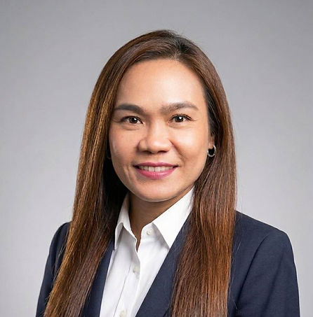

Ms. Preechaya Milinthangkoon
Senior Immigration & Estate CounselWith over 15 years of experience in legal practice, government coordination, and human resources, Ms. Preechaya Milinthangkoon is an expert in navigating Thailand's complex regulatory landscape.
Holding two Master of Laws (LL.M.) degrees from the USA, she specializes in Estate Administration and Probate, providing compassionate support for International Repatriations and embassy coordination. She is also a recognized specialist in Thai Permanent Residency and Citizenship applications, offering strategic guidance on immigration violations and property transactions with a focus on accuracy and compliant document management.
Preechaya graduated with a Bachelor of Laws from Thammasat University in 2000, and earned her Master of Laws from Indiana University Bloomington in 2008 and American University Washington College of Law in 2010.
Areas of Expertise
- Corporate and Commercial matters for foreign companies in Thailand
- Immigration act and family law
- Labor and employment
- Consumer protection
- Real estate
- Liaising with government authorities
Professional Experience
- Managed comprehensive estate and probate services, including complex foreign death repatriations, hospital/medical coordination, and funeral arrangements for international families.
- Strategized immigration solutions for residency applications and handled sensitive issues such as visa violations, overstay penalties, and immigration detention bail.
- Oversaw large-scale corporate operations as an HR Supervisor, managing payroll systems, recruitment, and the procurement of work permits for both Thai and foreign staff.
- Facilitated high-level government relations within the Ministry of Agriculture and Cooperative, reporting Cabinet resolutions and coordinating department-wide political initiatives.
Education
- American University Washington College of Law, USA
Master of Laws (LL.M.) (2010) - Indiana University Bloomington, USA
Master of Laws (LL.M.) (2008) - Thammasat University, Thailand
Bachelor of Laws (LL.B.) (2000)